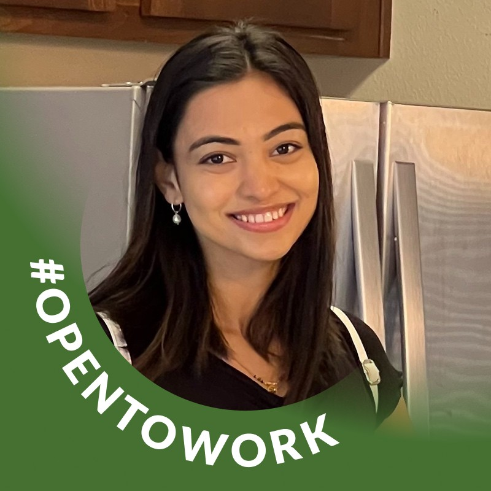

About Me
Hello! I’m Kalyani Zope, a passionate data enthusiast based in the San Francisco Bay Area. I love working with data and turning complex information into clear, actionable insights. My journey in data science and HR analytics has taken me through several roles where I analyzed large datasets, built predictive models, and automated processes to drive better decision-making.
Currently, I’m pursuing a Master’s in Data Analytics at San José State University. This program is equipping me with in‐depth skills in data visualization, machine learning, big data technologies, and deep learning, preparing me for the rapidly evolving world of data science.
Experience
San José State University
Spartan Student Ambassador
January 2025 – Present | San Jose, CA, United States
Currently representing the university as an ambassador while engaging with the campus community and promoting university initiatives.
HeapTrace Technology
Executive – HR Data Analyst
June 2022 – September 2022 | Pune, India
- Analyzed performance data for over 400 employees using Power BI, Excel, SQL, and Python to identify workforce patterns and trends.
- Designed and implemented a recruitment dashboard to track key metrics such as hiring duration and cost-per-hire.
- Conducted training needs analysis and developed structured training programs, leading to a 15% increase in engagement.
- Administered TalentLMS for over 400 employees and developed predictive models using Scikit-learn to forecast employee turnover.
- Configured Keka HRMS and managed data migration via ETL pipelines to ensure data accuracy.
Associate – HR Data Analyst
March 2021 – June 2022 | Pune, India
Supported the data analysis efforts within the HR department by streamlining reporting processes and contributing to strategic insights.
Amazon
Human Resources Analyst
October 2020 – March 2021 | Bangalore, India
- Analyzed attendance data from PeopleSoft for thousands of employees to identify trends in absenteeism, leave patterns, and overtime.
- Collaborated with HR teams to monitor compliance and improve workforce management.
Cheri Angel HR Consulting
Summer Intern – HR
May 2020 – July 2020 | Thane, Maharashtra, India
- Managed the recruitment process by sourcing candidates through job portals and social media.
- Assisted in applicant screening and collaborated with teams to clarify business needs.
SolutionGraph
Human Resources Intern
April 2020 – July 2020 | Remote
Gained hands-on experience in various HR functions while supporting remote operations and data management.
Education
San Jose State University
Master of Science (MS) in Data Analytics
Expected January 2024
iFEEL - Institute for Future Education Entrepreneurship and Leadership
PGDM in HR
2019 – 2021
North Maharashtra University
Bachelor of Engineering in Electrical, Electronics and Communications Engineering
2016 – 2019
Skills & Certifications
Core Skills
- Data Analysis & Visualization (Power BI, Excel, SQL, Python)
- Machine Learning & Prediction (Scikit-learn)
- Data Engineering & Automation (ETL pipelines, Apache Airflow)
- Business Intelligence (Dashboard creation)
Top Skills
Data Services, HR Software, Technical Recruiting
Certifications
- Recruiting Talent with Social Media
- Strategic Human Resources
- HR as a Business Partner
- Excel: VLOOKUP and XLOOKUP for Beginners
- Certified HR Analytics & Metrics Professional